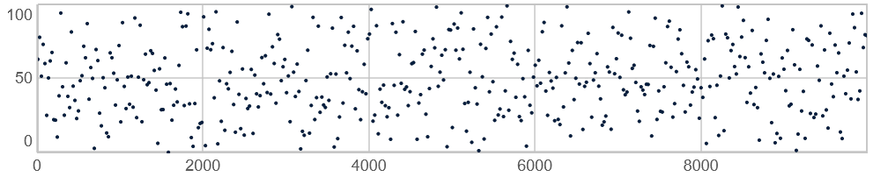
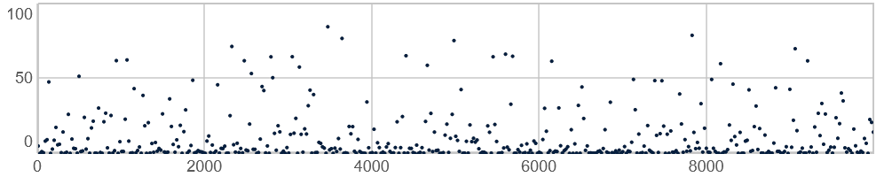
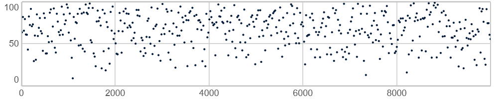
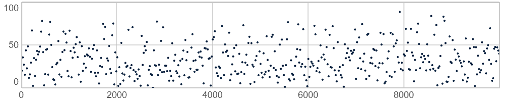
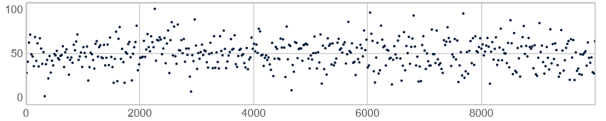
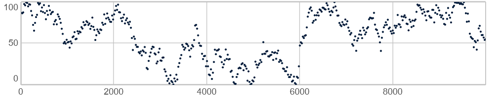

Patterns som aleatoriske og stokastiske redskaber
I midten af det 20. århundrede inkorporerede vigtige strømninger i kompositionsmusikken statistik og tilfældighed i deres kompositionsteknikker. Musikken gik under betegnelser som aleatorik, stokastisk musik, indeterminacy og chance music. Ordet alea er latin for terning, og man bruger jo som bekendt terninger til at skabe tilfældige udfald inden for et nøje defineret udfaldsrum. Aleatorik er som musikalsk tradition netop baseret på inkorporering af tilfældighed i kompositionsarbejdet.
Men hvad er egentlig tilfældighed? Man kan måske fra et psykologisk perspektiv lidt pragmatisk sige, at det tilfældige er det, vi opfatter som værende uorganiseret, eller hvor vi ikke kan finde nogen mønstre eller repetition i det, vi observerer. I matematikken og statistikken arbejder man med en lidt anden forståelse, hvor der i stedet er tale om sandsynligheden for, at bestemte hændelser sker. Det er denne tanke, som ligger bag ideen om stokastisk komposition, hvor de tilfældige udfald ikke er helt uforudsigelige men kan beskrives med statistiske redskaber.
I SuperCollider findes der mange forskellige patterns, som genererer tilfældige værdier. Herunder sammenlignes de mest almindelige af disse, idet der også gives eksempler på hvornår de forskellige redskaber meningsfuldt kan anvendes. Dog er der ikke nogen endegyldig facitliste for hvilke patterns man skal bruge i hvilke situationer, da de kan anvendes og kombineres frit.
Man kan groft skelne mellem to typer af patterns, som inkorporerer tilfældighed:
- Tilfældighedsgeneratorer
-
Genererer ligesom
Pwhiteværdier ud fra 2-3 parametre såsom øvre/nedre grænser eller grænser for spring, middelværdier eller spredning. - Listebaserede generatorer
-
Genererer ligesom
Pseqoutput baseret på specificerede lister af værdier (eller patterns).
Tilfældighedsbaserede patterns
Blandt de af SuperColliders indbyggede patterns, som på forskellig vis genererer tilfældige værdier, vil jeg fremhæve følgende som et nyttigt udvalg at kende til. De præsenteres herunder med deres standardargumenter (som vist i SuperColliders dokumentation).
Pwhite(min, max, antal)-
Genererer tilfældige tal mellem et minimum (
lo) og et maksimum (hi). Kendetegnet for Pwhite er, at alle tal mellem disse to grænser er lige sandsynlige. Anvendes typisk når man ønsker "helt" tilfældige værdier med mulighed for store og små spring, fx ved atonal eller arytmisk komposition. IPwhite(0, 10, 5)er 0 den nedre grænse, 10 den øvre grænse, og 5 antallet af genererede værdier.
10.000 værdier genereret med Pwhite(0, 100, 10000) Pexprand(min, max, antal)-
Tal tættest på den nedre grænse er mest sandsynlige, da sandsynligheden svarer til en eksponentialfordeling. Pexprand anvendes typisk hvor man ønsker en Pwhite-lignende fordeling, men inden for fx frekvens eller lydstyrke. Disse parametre skal følge en eksponentiel fordeling i stedet for en lineær fordeling, hvis vi skal tilnærme os, hvordan de perciperes af en menneskelig lytter.

10.000 værdier genereret med Pexprand(0.01, 100, 10000) Phprand(min, max, antal)-
Tal tættest på en øvre grænse er mest sandsynlige.

10.000 værdier genereret med Phprand(0, 100, 10000) Plprand(min, max, antal)-
Tal tættest på en nedre grænse er mest sandsynlige. Anvendes, hvor man kun ønsker få værdier tæt på en øvre grænse.

10.000 værdier genereret med Plprand(0, 100, 10000) Pgauss(middelværdi, standardafvigelse, antal)-
Tal tæt på en middelværdi er mere sandsynlige end tal, der ligger længere væk. Baseret på det, man kalder normalfordelingen/Gaussfordelingen. Vi bruger fx Pgauss hvis vi ønsker, at de fleste værdier skal ligge i omegnen af et centrum, fx midt i stereobilledet eller en skala, men hvor der kan være nogle få vildskud.
Med
Pgauss(10, 3, 5)er 10 middelværdien, 3 er standardafvigelsen, og 5 er antallet af genererede værdier.
10.000 værdier genereret med Pgauss(50, 17, 10000) Pbrown(min, max, maksimalt trin, antal)-
Genererer ligesom Pwhite tilfældige værdier mellem et minimum og et maksimum, men med en begrænset afstand (
trin_max) mellem to på hinanden følgende værdier. Algoritmen kendes også som en random walk/drunkard's walk. Pbrown bruges, når man ønsker en gradvis udvikling i en strøm af tilfældigt valgte værdier, dvs. hvor springene mellem de enkelte skridt er begrænsede. Det kunne fx være ved trinbevægelser i melodier eller ved en cutoff-frekvens, som skal bevæge sig mere organisk mellem forskellige værdier.I
Pbrown(0, 10, 3, 5)er 0 den nedre grænse, 10 den øvre grænse, 3 det maksimale spring fra den ene værdi til den næste, og 5 antallet af genererede værdier.
10.000 værdier genereret med Pbrown(0, 100, 2, 10000)
Listebaserede, stokastiske patterns
Disse patterns anvender vi, hvis vi gerne vil definere en række mulige udfald, men vil lade algoritmen bestemme hvordan der vælges mellem valgmulighederne eller hvilken rækkefølge en foruddefineret sekvens afspilles i. Genopfrisk gerne emnet lister.
Prand(liste, antal)-
Vælger et bestemt
antaltilfældige tal fra en givenliste. Anvendes, når man blot ønsker, at algoritmen vælger blandt en liste med givne valgmuligheder. Pxrand(liste, antal)-
Fungerer præcis ligesom
Prand, bortset fra, at samme element ikke vælges to gange i træk. Anvendes, hvis vi fx ikke ønsker tone- eller rytmegentagelser. Pwrand(liste, antal, sandsynligheder)-
Vælger ligesom de to foregående patterns tilfældige elementer fra en given liste, men med forskellige sansyndligheder for disse valg. Anvendes, hvis nogle valgmuligheder skal forekomme oftere end andre. Det kunne fx være rytmiske variationer, som er mindre hyppige end mere almindelige grooves. Bemærk, at tallene i listen med sandsynligheder sammenlagt skal give 1, hvilket kan gøres let med array-method'en
.normalizeSum. Pshuf(liste, antal)-
Fungerer ligesom den almindelige
Pseq, bortset fra, at den givne liste afspilles i en tilfældig rækkefølge. Kan være nyttigt, hvor man ønsker at gentage en sekvens, selvom selve sekvensen er sat i tilfældig rækkefølge - det kan give en fornemmelse af regelmæssighed, selvom rækkefølgen er ny. Bemærk, at antallet af antagelser her er antallet af gentagelser af hele listen (modsat fxPrandellerPseries, hvor antallet angiver antal enkeltelementer).
Der findes andre relevante listebaserede patterns som Place, men disse er lidt mere komplicerede og gennemgås derfor først senere.